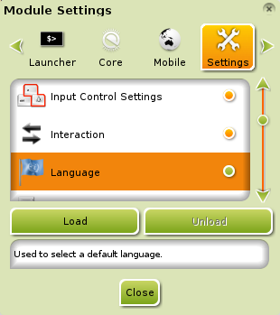
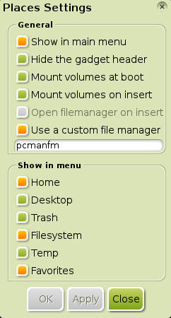
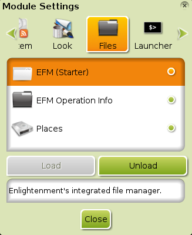
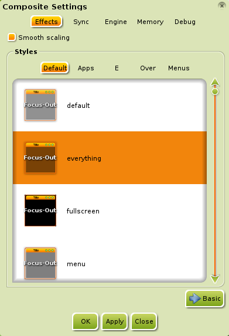
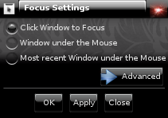

[click on any image to enlarge]
Many new users to Bodhi seem to have the same questions, so here are the answers to a few of them:
Why are there so few applications installed?
Part of the Bodhi Linux philosophy is minimalism and user choice. We feel
that our users are intelligent enough to choose what applications they
want, and we provide an easy way to do so at the Bodhi Linux
AppCenter. We also feel that it is easier and better for you
to build the system you want from the start, rather than
having to remove a lot of applications you don't want and/or need and then
install the ones you want/need.
How do I change the system language?
{kind=link}
This is simple, assuming you have already installed a language pack as described
here.
Firstly, check to make sure the Language module is loaded.
To do this, go to Main Menu>Settings>Modules and, in the Module Settings dialog,
navigate to the Settings tab, Scroll down until you get to Language and select it. If the Unload
button is inactive, then the module is not loaded. If that is the case, click the Load button to load it.
Now, navigate to Main Menu>Settings>All>Language>Language Settings. There, select the language pack you've
installed and click OK.
{kind=link}
{kind=link}
Some people may have to navigate to Main Menu>Settings> All>Language> Input Method,
tick "Use No Input Method", select ibus, click
"Setup Selected", and, finally, Apply for the language change to work.
Refreshing your desktop with a Main Menu> Enlightenment>Restart may be needed, as well.
That is all there
is to it!
Note:The images of the Language Settings dialog depict French after having installed the bodhi-language-fr
package in the example of the Installing Software page.
How do I change keyboard layouts?
Firstly, check to make sure the Keyboard module is loaded.
To do this, go to Main Menu>Settings>Modules and, in the Utilities tab of the
Module Settings dialog, scroll down until you get to Keyboard. Click on it and, if the Unload
button is inactive, then the module is not loaded. If that is the case, click the Load button to load it.
Now, navigate to Main Menu>Settings>All>Input>Keyboard.
Click the Add button of the Keyboard Settings dialog.
Here, select the keyboard layout you desire and click OK to add the layout to your available configurations.
Now that it has been added, simply click it, move it to the top with the Up button, and
click OK to implement it!
Note: Once you've loaded the Keyboard module, you can now add the Keyboard
Gadget to a shelf or your desktop. This allows extreme convenience for all
those rampant layout switchers!
Where are the desktop icons?
As of Bodhi 2.1.0, Desktop Icons are enabled by default, thanks to the
decision towards Enlightenment File Manager (EFM) as the default file manager.
EFM supports desktop icons in Enlightenment (e17).
You can add files and launchers to the Desktop by moving said
files/launchers into the Desktop folder located in your home directory.
Simple!
Conversely, you can opt out of displaying desktop icons at
Main Menu>Settings>All>Files>File Manager, under the Display tab.
How do I replace EFM with another file manager?

{kind=link}
You do not need to remove or replace EFM to use another file manager (FM) or to assign another FM as the default FM:
-
To use another FM, simply install the desired FM
and use its respective Applications menu entry or launcher
(a.k.a. desktop-file) when you wish to run it.
- To assign another FM as the default FM, simply go to Main Menu>Settings>All>Apps>Default Applications. There, select "File" from the left section, "Default Applications", and scroll through the right section, "Selected Application", to find your desired File Manager. (This is assuming you have already installed said FM.) After selecting it, click Apply. Then OK.
To remove EFM and its Navigate... menu entry, see the question below.
As for replacing EFM, we will assume you mean in regard to assigning the
Navigate... menu entry to another FM. This is not possible, but
Enlightenment (e17) does offer an alternative module that can assign any external FM! It is called
Places and is installed by default. To load the module,
go to Main Menu> Settings> Modules.
At the tabs on top, scroll right until you get to the Files tab. There,
select Places and click the "load" button. Now, to assign your desired FM, go to
Main Menu>Settings>All>Files>Places and check
Use a custom file manager. Type the command that runs your FM in the text-field. Click Apply.
Then OK. Done.
How do I remove/uninstall EFM?

{kind=link}
EFM's version of removal is unloading its respective module, EFM (Starter). It cannot be uninstalled, because it is integrated into Enlightenment (e17), itself. To unload the module, go to Main Menu>Settings>Modules. At the tabs on top, scroll right until you get to the Files tab. There, select EFM (Starter) and click the "Unload" button. It is now disabled and cannot be used; keep in mind that this also removes the Navigate... entry in the Main Menu and anything else that depends on EFM, such as desktop icons.
Why does Bodhi Linux use Midori Web Browser?

When we polled our users asking what the default web browser should be, we found a nearly equal 3-way tie among the current version of Firefox, an older version of Firefox, and Chromium. So, instead of choosing one of those that would have left approximately 2/3 of our users dissatisfied and needing to install another browser anyway, we went in a totally different direction: Midori!
Midori has the advantages of being very lightweight yet highly functional, which fits in with the Bodhi Linux philosophy (see the first question). Midori also has the ability to install applications directly from the Bodhi Linux AppCenter, a feature which some other browsers lack.
How do I disable "bouncy" windows?

{kind=link}
People who use the Composite Module seem to ask this a lot.
To disable this effect, go to Main Menu>Settings>All>Look>Compositing.
Click on Advanced. In the lower part of the window, select anything other
than default, click Apply, and you will no longer have "bouncy" windows.
Why do I have to click the title bar to bring a window to the front?

{kind=link}
This is known as "Pointer Focus" and is the standard method of focusing windows on UNIX desktops from long ago. It is also the default choice of the developers of Enlightenment, and as such Bodhi Linux chooses to respect their decision for the default behavior.
It should also be noted that keystrokes will be received by the window that is in Focus, which is not necessarily the window that is on top.
We do recognize that many users are unaccustomed to this behavior, but it's very easily configured to suit your tastes. Just go to Main Menu>Settings>All >Windows>Window Focus. From there, select the option you would prefer, click Apply, then Close.
Pointer Focus can be a much more productive method, so don't be too hard on it: give it a try!
More info...
There is a "proper" FAQ on the Bodhi Linux Doc Wiki. It is always a "work in progress" and is editable by anyone. That being said, if you have a question and answer that you feel should be added to the FAQ, feel free to add it!